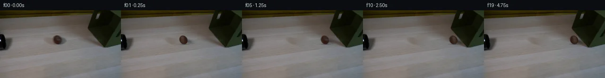

![首帧]()

Round 00
2026-11-05T16:35:46.305686+00:00像素候选变化代码 +313/−0inspection 更新
pixels b1aba584ee7f4135 · code c5120d1d6d0b41d3
查看本轮 generate.py 真实 diff
--- previous/generate.py
+++ current/generate.py
@@ -0,0 +1,313 @@
+"""Source-pixel continuation using local interpolation and analytic rolling geometry.
+
+No model, renderer, network access, image viewing, or additional scene input.
+"""
+from pathlib import Path
+import json
+import math
+import re
+import base64
+import numpy as np
+from PIL import Image, ImageDraw
+from scipy.ndimage import gaussian_filter, map_coordinates, convolve
+from artifact_io import save
+
+ROOT = Path(__file__).resolve().parent
+W, H = 256, 144
+FPS = 4
+SOURCE = np.asarray(Image.open(ROOT / 'first_frame.png').convert('RGB'))
+assert SOURCE.shape == (H, W, 3)
+SRC = SOURCE.astype(np.float64)
+YY, XX = np.mgrid[:H, :W].astype(np.float64)
+CX0, CY, RX, RY = 120.5, 62.4, 8.55, 9.25
+SKEW = 0.14
+
+
+def sample_rgb(array, x, y):
+ return np.stack([map_coordinates(array[..., c], [y, x], order=1,
+ mode='nearest', prefilter=False)
+ for c in range(3)], axis=-1)
+
+
+def make_clean_plate():
+ # Limit reconstruction to the ball and its close shadow. The larger wood
+ # shading, tube, box, and everything outside this polygon remain source pixels.
+ polygon = [(116, 52), (126, 52), (134, 55), (142, 58), (144, 64),
+ (141, 70), (132, 73), (119, 74), (110, 71), (106, 65),
+ (107, 58), (112, 55)]
+ imask = Image.new('L', (W, H), 0)
+ ImageDraw.Draw(imask).polygon(polygon, fill=255)
+ mask = np.asarray(imask) > 0
+ # Solve a boundary-conditioned harmonic fill. Stronger horizontal weights
+ # follow the tabletop grain while the vertical boundary fixes illumination.
+ kernel = np.array([[0., .18, 0.], [.32, 0., .32], [0., .18, 0.]])
+ plate = SRC.copy()
+ seed = np.mean(SRC[75:79, 107:143], axis=(0, 1))
+ plate[mask] = seed
+ for _ in range(900):
+ for c in range(3):
+ avg = convolve(plate[..., c], kernel, mode='nearest')
+ plate[..., c][mask] = avg[mask]
+ # A small source-derived high-pass texture avoids a flat smooth patch.
+ grain = SRC - gaussian_filter(SRC, (1.1, 2.4, 0))
+ copied = np.roll(grain, -24, axis=0)
+ feather = gaussian_filter(mask.astype(float), .7)
+ strength = np.clip((feather - .5) * 2, 0, 1) * mask
+ plate += copied * strength[..., None] * .70
+ plate[~mask] = SRC[~mask]
+ return np.clip(plate, 0, 255), mask
+
+
+PLATE, REPAIR_MASK = make_clean_plate()
+
+
+def shadow_opacity(cx, cy=CY):
+ dx, dy = XX - cx, YY - cy
+ # Close, soft light-from-left shadow: finite falloff on the tabletop.
+ cast = .36 * np.exp(-.5 * (((dx - 10.1) / 6.6) ** 2
+ + ((dy - .23 * dx - .7) / 3.0) ** 2))
+ contact = .39 * np.exp(-.5 * (((dx - 1.7) / 6.4) ** 2
+ + ((dy - 9.1) / .90) ** 2))
+ return 1 - (1 - cast) * (1 - contact)
+
+
+# Fractional coverage of the original softly sampled silhouette. This is an
+# analytic local mask, constructed here; it is not an additional scene input.
+q0x = (XX - CX0 - SKEW * (YY - CY)) / RX
+q0y = (YY - CY) / RY
+q0 = np.sqrt(q0x * q0x + q0y * q0y)
+coverage0 = np.clip(.5 + (1 - q0) * 6.7, 0, 1)
+coverage0 = gaussian_filter(coverage0, (.27, .63))
+# Recover the muted brown surface from the original sphere, accounting for
+# covered background and an approximate source shadow.
+shadow0 = shadow_opacity(CX0)
+under0 = PLATE * (1 - shadow0[..., None])
+foreground = (SRC - under0 * (1 - coverage0[..., None])) / np.maximum(coverage0[..., None], .16)
+foreground = np.clip(foreground, [31, 18, 10], [82, 69, 68])
+# Values close to the silhouette are least certain. Extend reliable interior
… diff truncated; 226 more lines …